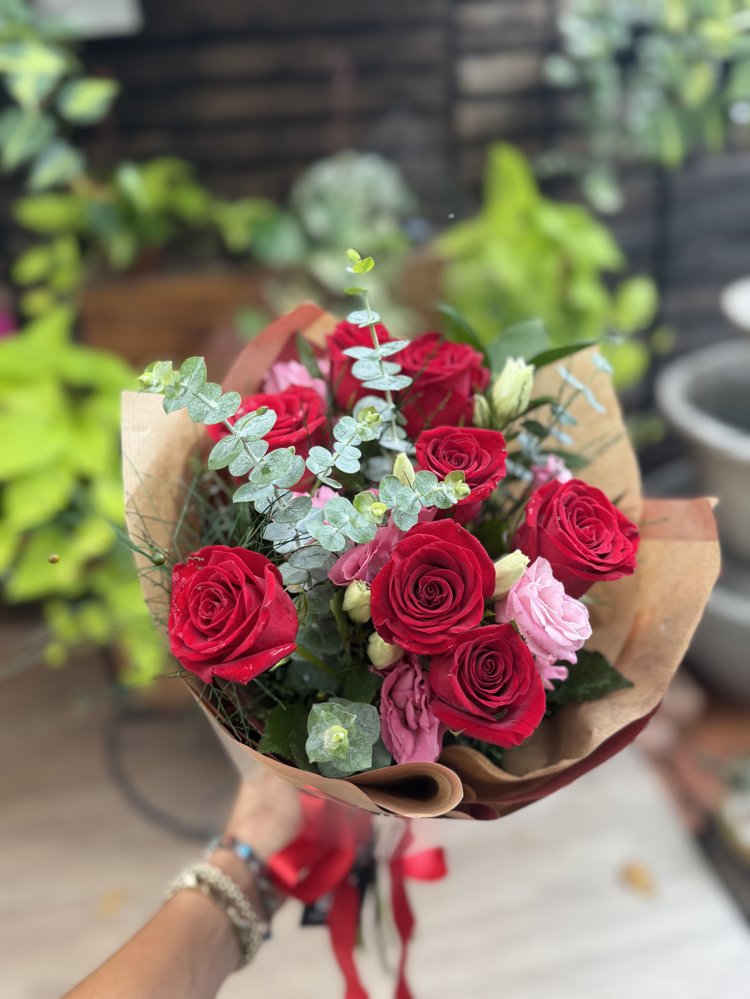
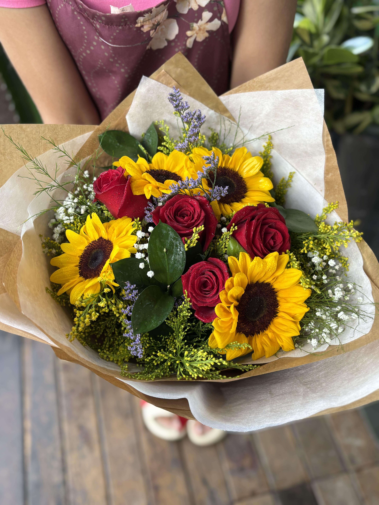
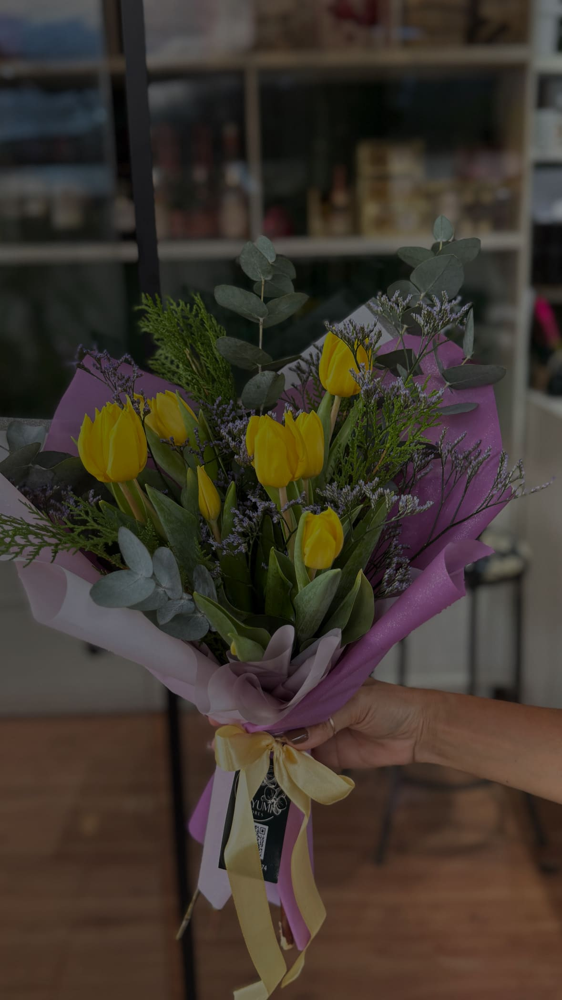
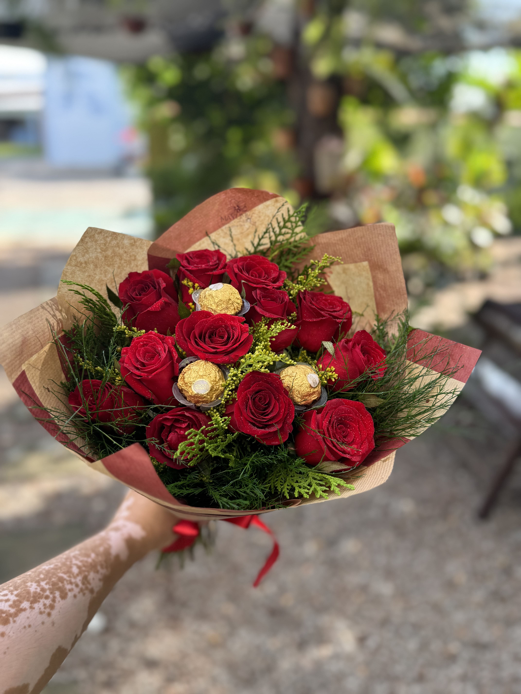
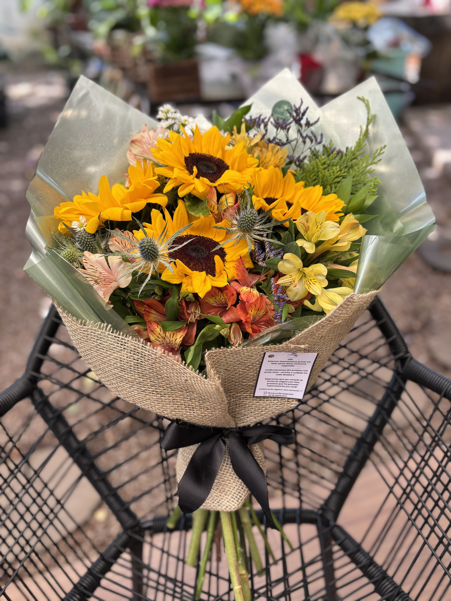
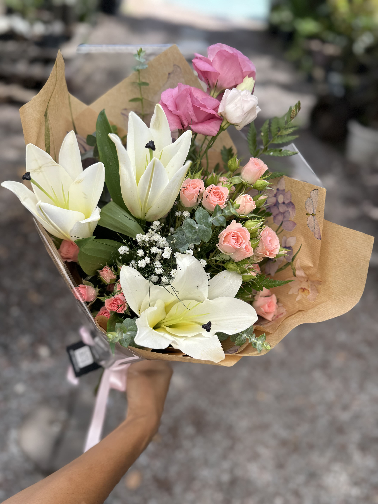
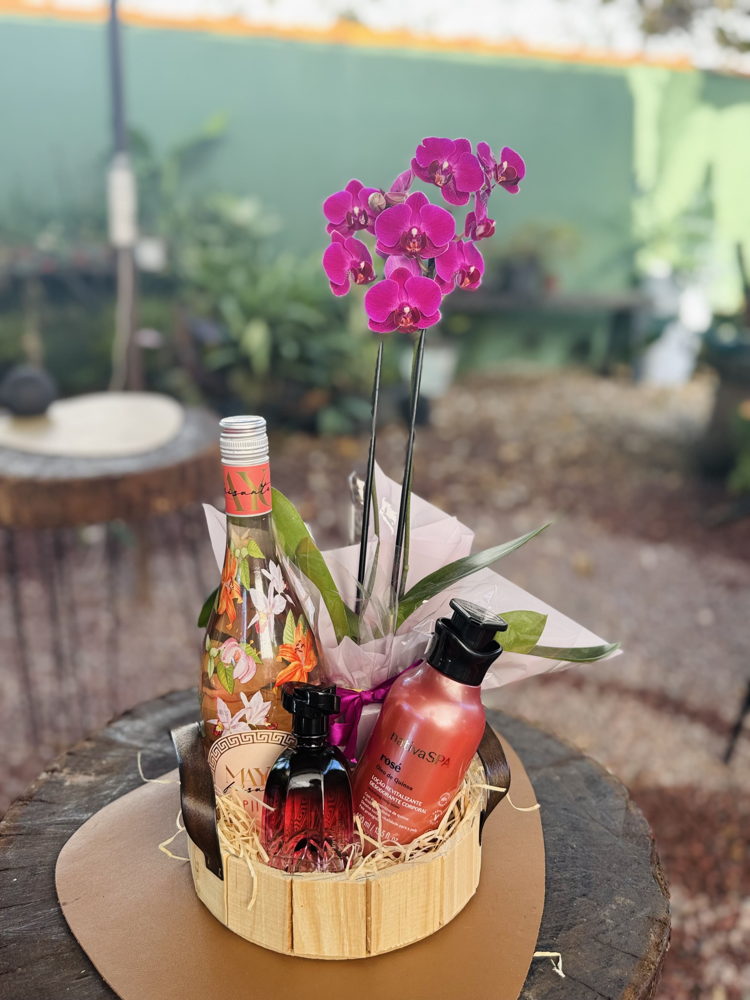
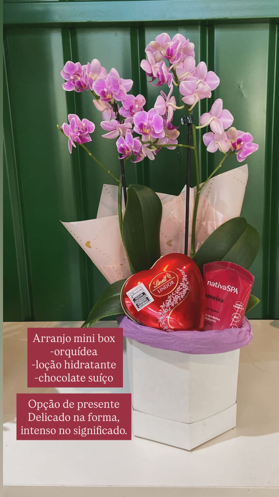

Floricultura, presentes e jardim em Sinop
Flores que acolhem momentos especiais com delicadeza, cor e significado.
A Mayumi Flores e Jardim cria buquês, cestas de presente, arranjos para homenagens, opções para datas marcantes e cuidados para ambientes que pedem beleza no dia a dia.


Rua Castanheiras, 851
Atendimento em Sinop Das 7h às 19h com atendimento pelo WhatsApp
Escolha o que combina com o seu momento
Buquês românticos, presentes delicados, coroas de flores, paisagismo e opções para uma rotina mais leve.
- Buquê de flores
- Coroa de flores
- Cesta de presente
- Paisagismo
- Espaço Herbalife
Coleções em destaque
Arranjos que passam do romântico ao solar sem perder o toque artesanal.
Navegue pelas composições e veja opções para surpreender, homenagear ou simplesmente levar mais beleza para o dia.

Romântico
Rosas com chocolate
Uma escolha intensa para aniversários, declarações e datas que pedem um gesto memorável.

Solar
Girassóis que iluminam
Composições vivas para celebrar conquistas, visitas especiais e dias que merecem mais cor.

Delicado
Lírios e tons suaves
Leveza para presentear com elegância e transmitir carinho com uma composição mais serena.

Presente
Mini box com orquídea
Uma opção delicada com flores e mimo especial para surpreender de forma completa.
.jpeg)
Noivas
Contraste marcante
Buquê de noiva com rosas brancas, mosquitinho e folhagens para cerimônias delicadas e cheias de presença.
Assinatura Mayumi
Rosas com textura natural
Folhagens, papel kraft e acabamento caprichado que valorizam cada detalhe do arranjo.

Elegância
Orquídeas em foco
Uma leitura mais minimalista para quem prefere impacto visual com suavidade.
Solar
Tulipas amarelas
Cor vibrante e acabamento sofisticado para presentes que pedem alegria logo no primeiro olhar.
Delicado
Brancos e rosas suaves
Uma combinação elegante para levar afeto com visual refinado e leveza na medida certa.
Atendimento para diferentes ocasiões
Do presente ao cuidado com ambientes, tudo no mesmo endereço.
Buquês de flores
Rosas, lírios, girassóis, tulipas e composições personalizadas para emocionar em cada entrega.
Coroas de flores
Atendimento para homenagens com sensibilidade, respeito e arranjos pensados para esse momento.
Cestas e presentes
Mini box, chocolates, orquídeas e combinações criadas para aniversários, agradecimentos e surpresas.
Paisagismo e espaço vida saudável Herbalife
Mais verde para o ambiente e um espaço acolhedor para quem valoriza bem-estar no dia a dia.
Olhar de perto
Uma vitrine feita de cor, textura e acabamento artesanal.
Cada arranjo carrega combinações naturais, embalagens caprichadas e uma atmosfera que mistura floricultura, jardim e presentes com identidade própria.
Presença local
Na Rua Castanheiras, 851, a Mayumi Flores e Jardim atende Sinop com flores e cuidado em cada detalhe.
Quem busca buquê de flores, coroa de flores, cesta de presente, paisagismo ou espaço Herbalife encontra atendimento direto e um ambiente cercado pela energia natural das plantas e dos arranjos.
Para presentear
Flores com chocolates, mini box e composições delicadas Escolhas que unem beleza, carinho e acabamento especial.Mayumi Flores e Jardim
Seu próximo presente, homenagem ou projeto verde pode começar agora.
Chamar no WhatsApp
Atendimento em Sinop | Rua Castanheiras, 851 | Das 7h às 19h